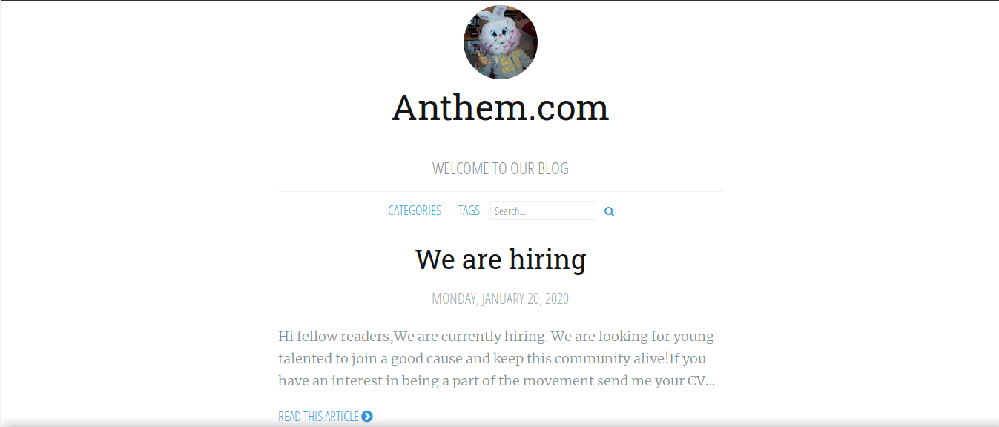
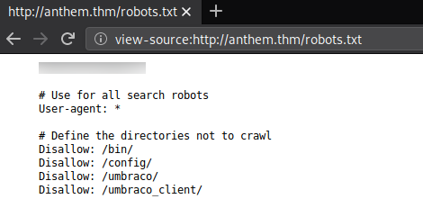
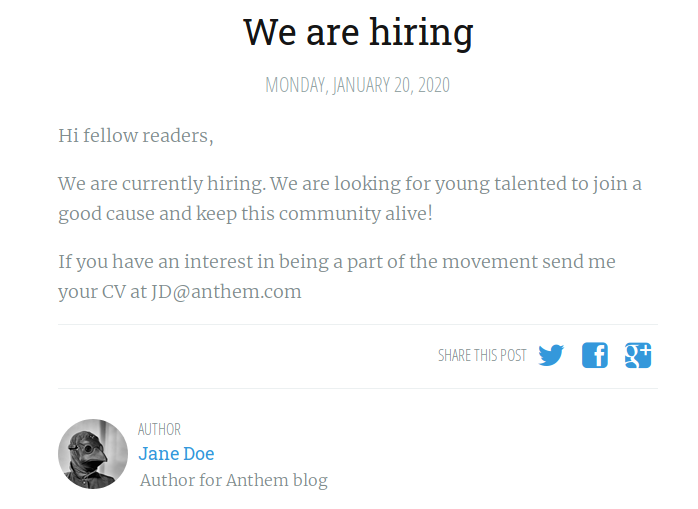
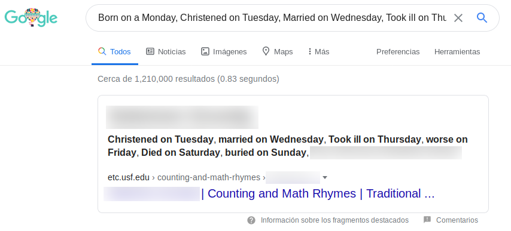
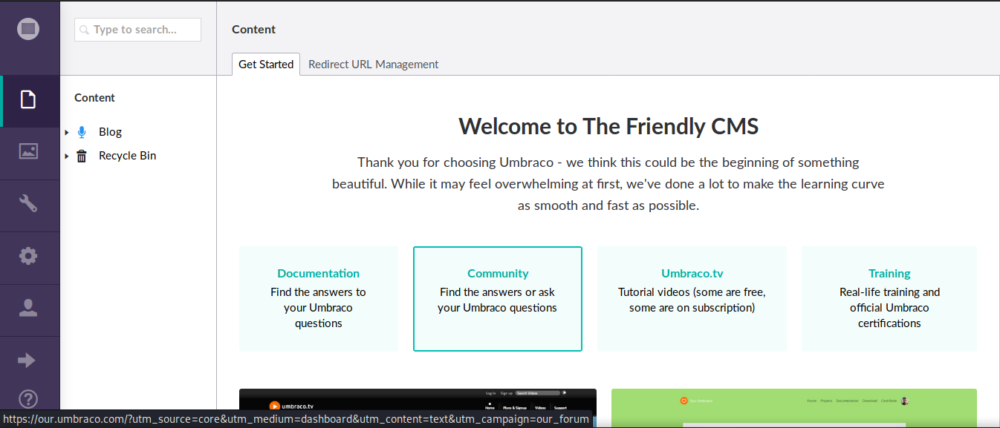
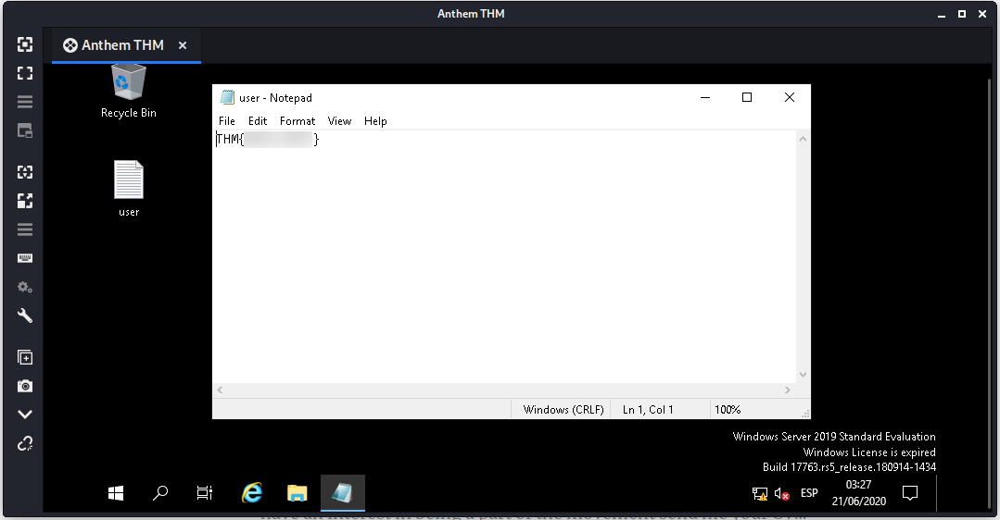
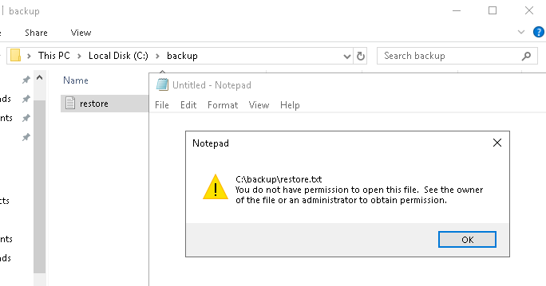
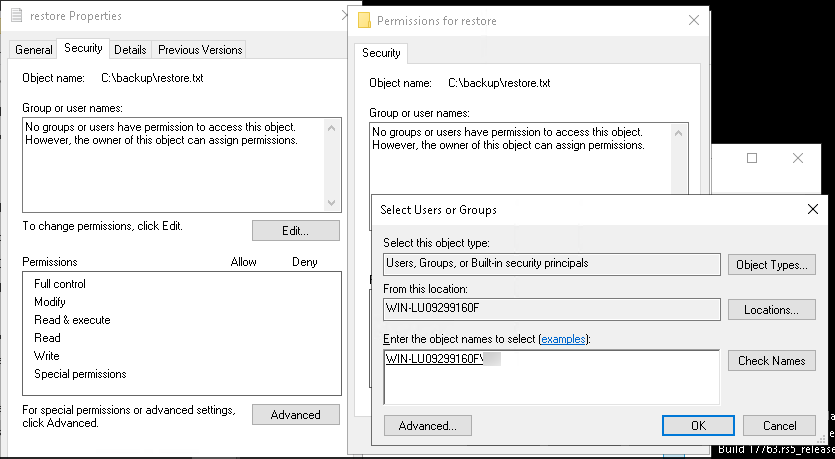
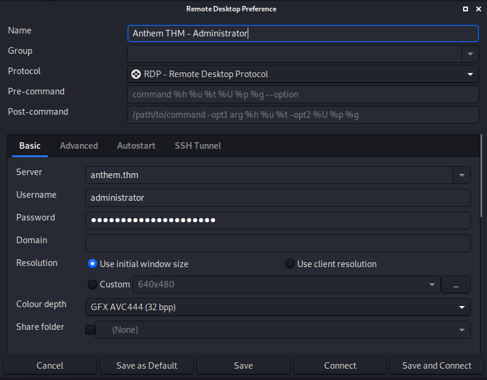
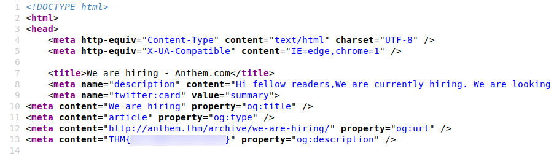

TryHackMe - Anthem

Contenido
| Titulo | Anthem |
|---|---|
| Room | Anthem |
| Info | Exploit a Windows machine in this beginner level challenge. |
| Puntos | 670 |
| Dificultad | Facil |
| Maker | Chevalier |
NMAP
Escaneo de puertos tcp, nmap nos muestra el puerto http (80) y el puerto rdp (3389) abiertos.
# Nmap 7.80 scan initiated Sat Jun 20 18:56:03 2020 as: nmap -sV -o nmap_scan_mini anthem.thm
Nmap scan report for anthem.thm (10.10.109.143)
Host is up (0.19s latency).
Not shown: 995 closed ports
PORT STATE SERVICE VERSION
80/tcp open http Microsoft HTTPAPI httpd 2.0 (SSDP/UPnP)
135/tcp open msrpc Microsoft Windows RPC
139/tcp open netbios-ssn Microsoft Windows netbios-ssn
445/tcp open microsoft-ds?
3389/tcp open ms-wbt-server Microsoft Terminal Services
Service Info: OS: Windows; CPE: cpe:/o:microsoft:windows
Service detection performed. Please report any incorrect results at https://nmap.org/submit/ .
# Nmap done at Sat Jun 20 18:58:39 2020 -- 1 IP address (1 host up) scanned in 156.11 seconds
# Nmap 7.80 scan initiated Sat Jun 20 20:27:23 2020 as: nmap -T4 -sV -sC -p- -o nmap_scan anthem.thm
Warning: 10.10.194.228 giving up on port because retransmission cap hit (6).
Nmap scan report for anthem.thm (10.10.194.228)
Host is up (0.18s latency).
Not shown: 65520 closed ports
PORT STATE SERVICE VERSION
80/tcp open http Microsoft HTTPAPI httpd 2.0 (SSDP/UPnP)
| http-robots.txt: 4 disallowed entries
|_/bin/ /config/ /umbraco/ /umbraco_client/
|_http-title: Anthem.com - Welcome to our blog
135/tcp open msrpc Microsoft Windows RPC
139/tcp open netbios-ssn Microsoft Windows netbios-ssn
445/tcp open microsoft-ds?
3389/tcp open ms-wbt-server Microsoft Terminal Services
| rdp-ntlm-info:
| Target_Name: WIN-LU09299160F
| NetBIOS_Domain_Name: WIN-LU09299160F
| NetBIOS_Computer_Name: WIN-LU09299160F
| DNS_Domain_Name: WIN-LU09299160F
| DNS_Computer_Name: WIN-LU09299160F
| Product_Version: 10.0.17763
|_ System_Time: 2020-06-21T01:45:48+00:00
| ssl-cert: Subject: commonName=WIN-LU09299160F
| Not valid before: 2020-04-04T22:56:38
|_Not valid after: 2020-10-04T22:56:38
|_ssl-date: 2020-06-21T01:45:58+00:00; 0s from scanner time.
5985/tcp open http Microsoft HTTPAPI httpd 2.0 (SSDP/UPnP)
|_http-server-header: Microsoft-HTTPAPI/2.0
|_http-title: Not Found
20106/tcp filtered unknown
47001/tcp open http Microsoft HTTPAPI httpd 2.0 (SSDP/UPnP)
|_http-server-header: Microsoft-HTTPAPI/2.0
|_http-title: Not Found
49664/tcp open msrpc Microsoft Windows RPC
49665/tcp open msrpc Microsoft Windows RPC
49666/tcp open msrpc Microsoft Windows RPC
49667/tcp open msrpc Microsoft Windows RPC
49669/tcp open msrpc Microsoft Windows RPC
49670/tcp open msrpc Microsoft Windows RPC
49671/tcp open msrpc Microsoft Windows RPC
Service Info: OS: Windows; CPE: cpe:/o:microsoft:windows
Host script results:
| smb2-security-mode:
| 2.02:
|_ Message signing enabled but not required
| smb2-time:
| date: 2020-06-21T01:45:49
|_ start_date: N/A
Service detection performed. Please report any incorrect results at https://nmap.org/submit/ .
# Nmap done at Sat Jun 20 20:45:59 2020 -- 1 IP address (1 host up) scanned in 1116.48 seconds
HTTP
Pagina web en el puerto 80. 
GOBUSTER
Utilizamos gobuster para busqueda de directorios y archivos.
root@upset:~/thm/anthem# gobuster dir -u http://anthem.thm -w /usr/share/wordlists/dirb/common.txt -q -t 15 -x php,html,txt
/Archive (Status: 301)
/archive (Status: 301)
/authors (Status: 200)
/Blog (Status: 200)
/blog (Status: 200)
/categories (Status: 200)
/install (Status: 302)
/robots.txt (Status: 200)
/robots.txt (Status: 200)
/rss (Status: 200)
/RSS (Status: 200)
/search (Status: 200)
/Search (Status: 200)
/sitemap (Status: 200)
/SiteMap (Status: 200)
/tags (Status: 200)
/umbraco (Status: 200)
Encontramos en el archivo robots.txt direcciones que no aparecen en GOBUSTER, además encontramos una frase que posiblemente sea util.

Visitamos /umbranco y encontramos un panel de inicio de sesion, pero aun no tenemos credenciales.

En uno de los Posts de la pagina, encontramos un correo, que nos podria servir para encontrar otros. 
Intentamos utilizar el correo junto a la frase que encontramos pero no funcionó en /umbranco. En una de las pistas del CTF nos dice que utilicemos nuestro buscador favorito, pero ¿qué vamos a buscar?.
Dentro de uno de los posts encontramos un poema, al buscar este poema en internet encontramos un nombre del que parece ser el autor de este.

Autor 
UNBRANCO
Con esto, logramos encontrar el nombre del administrador y el correo (con el patron Jose Lopez -> JL@dominio.com). Intentamos utilizar el correo con la frase encontrada en /umbranco y logramos obtener acceso.

La version de Umbraco es 7.15.4 por lo que no encontramos un exploit que pudiera ayudarnos a tener acceso en la maquina.
RDP - USER
Intentamos mediante el servicio RDP con las credenciales y logramos acceder mediante este.
Instalacion de Remmina:
apt install remmina

Logramos obtener una sesion y la flag user.txt. 
ADMINISTRATOR - USER
Teniendo una sesion en la maquina buscamos informacion que pudiera ayudarnos a escalar privilegios, no encontramos binarios, archivos o servicios en los cuales apoyarnos. Pero, al revisar las carpetas nos damos cuenta que no esta activada la opcion de que permite ver archivos ocultos. La activamos y encontramos un archivo en el directorio principal del disco.
Al intentar abrir el archivo nos muestra un mensaje de que no tenemos permisos. 
Vemos las propiedades del archivo y vemos que no tiene ningun grupo o usuario permitido escribir, leer o modificar. Agregamos nuestro usuario al archivo. Escribimos el nombre de nuestro usuario y damos Check Names y automaticamente lo agrega con el nombre del equipo.

Aplicamos y vemos que nuestro usuario tiene todos los permisos permitidos.

Abrimos el archivo, logramos leer el archivo y vemos una frase dentro.

Agregamos una nueva conexion al servicio RDP pero con el usuario administrator y con la frase que encontramos. 
Logramos obtener una sesion y nuestra flag root.txt.

FLAGS EXTRA
FLAG 1
La encontramos en el primer post. 
FLAG 2
La flag la encontramos en el codigo fuente de la pagina.

FLAG 3
La encontramos en el perfil de Jane Doe.

FLAG 4
Encontramos la flag en el segundo post.